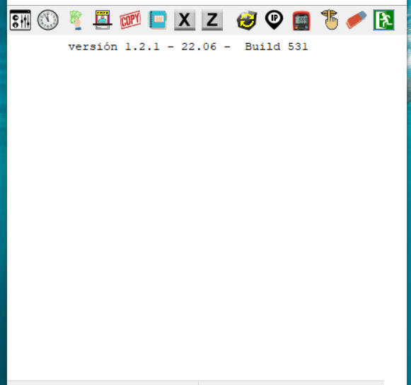
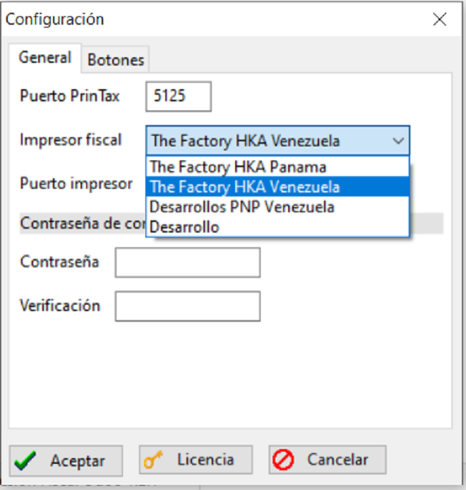

IMPORTANTE: La licencia PERMANENTE del aplicativo se vende aparte (290$ USD), se podra solicitar una licencia demo TEMPORAL para probar el buen funcionamiento del aplicativo. CUALQUIER DUDA O PARA SOPORTE Y GUIA: email: odoasys@gmail.com, WhatsApp: (+58)414-4095646
# Modulo de comucicacion con el ejecutable del spooler fiscal bajo Windows 64/32 y Linux
Compatible para Odoo 13, 14 y 15 (pronto v16), Community & Enterprise
El modulo en Odoo para imprimir a impresor fiscal via el programa server/spooler fiscal
Odoo >> spooler >> Impresora Fiscal
Version 1.2.1 [compatible con la nueva providencia del IGTF]
Compatible con IMPRESORAS FISCALES THE FACTORY HKA Y PNP EPSON Venezuela / Panama
La licencia demo y/o permanente del aplicativo ejecutable se solicita con serial del impresor y RIF
El modulo utiliza el programa ejecutable bajo Windows para emitir facturas en impresores fiscales desde
facturacion y POS. Estos impresores estan adaptados a la legislacion de
varios paises específicos; en esta version Venezuela y Panama.
Esta version esta homologada con los modulos fiscales desarrollados por:
- Desarrollos PNP, C.A.(impresores Epson y compatibles de desarrollos PnP).
- TheFactory HKA para impresores Bixolon y HKA80 (Y compatibles de desarrollos TheFactory ).
- Desarrollos privados

El programa ejecutable hace un puente entre modulo de facturacion Odoo y un impresor fiscal. Desde Odoo se envían los mensajes al aplicativo, este lo interpreta y lo adapta al impresor configurado. El aplicativo responde al Odoo con el resultado de la operacion sea exitosa o fallida.
Vendemos la licencia del programa, un solo pago. se da periodo de prueba con modulos POS y facturacion compatible y probado con Odoo 13,14 y 15 (pronto v16). Aparte del manual de uso y comandos desde Odoo - Programacion Python. El modulo en Odoo es codigo abierto y lo puede modificar y desarrollar y usar su propio modulo que desarrolle en Odoo.
** Modulo para la emision de facturas fiscales a traves del aplicativo desde facturacion
Este modulo utiliza el programa PrinTax para emitir facturas en impresores fiscales desde el modulo de facturacion normal en Odoo
.
** Modulo para la emision de facturas fiscales a traves del programa aplicativo desde el POS.
Este modulo utiliza el programa aplicativo para emitir facturas en impresores fiscales desde el modulo de punto de venta (POS).

Instalacion
El aplicativo se debe instalar en el equipo que este conectado físicamente y directo al impresor fiscal, para instalarlo se ejecuta el instalador y se le da aceptar en las diferentes opciones.
Se agrega una impresora con direccion IP usando la IP de la PC donde esta instalado el aplicativo.
Tabla de contenido del manual
Manual de Operacion Version 1.2.1............... 3
Instalacion ............... 3
Ejecucion del aplicativo ............... 3
Desactivacion de botones ............... 5
Operacion regular............... 6
Apertura de caja ............... 7
Reporte X ............... 7
Reporte Z ............... 8
Copia de factura ............... 8
Tarifas de Impuesto ............... 9
Manual de Programacion Version 1.2.1 ...............11
Envío de comando desde ODOO - Programacion Python ............... 11
Tipos de operacion ............... 12
Parametros según tipo de mensaje ............... 13
Apertura y cierre de caja ............... 15
Carga de cajeros ............... 15
Carga de medios de pago ............... 16
Encabezados y pie de pagina ...............16
Impresion de facturas ............... 16
Ejemplo de factura & Reimpresion de facturas ............... 18
Notas de credito & Reimpresion de notas de credito ............... 19
Documentos no fiscales & Tarifas de impuesto ............... 20
Reimpresion de reporte de cierre Z ............... 21